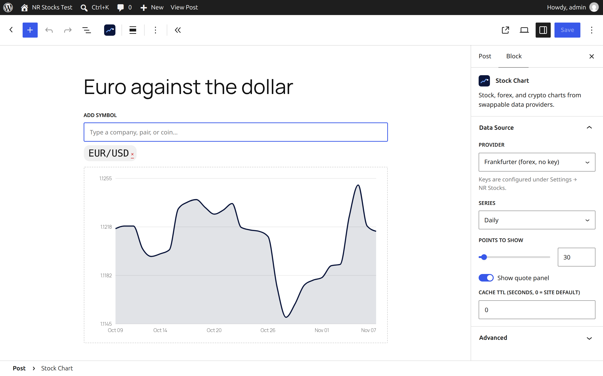
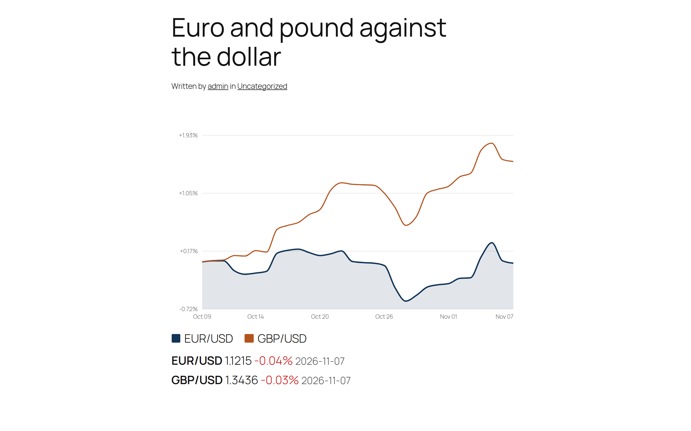
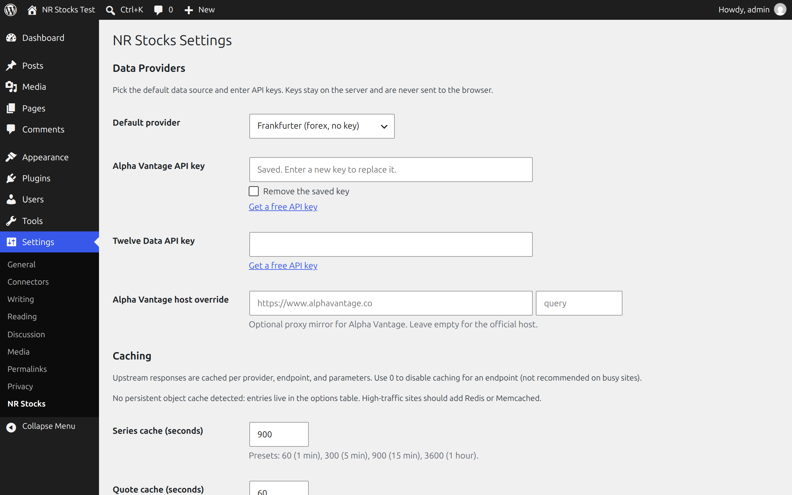

Stock Chart block
Search symbols, compare several on one chart, and choose daily, weekly, monthly, or intraday series with a live preview.
WordPress block plugin
NR Stocks adds stock, forex, and crypto charts to posts and pages. Pick a provider, search a symbol, compare several on one chart, and show the latest quote. Data is fetched and cached on your server, so API keys never reach the browser.
Screenshots



What it does
Search symbols, compare several on one chart, and choose daily, weekly, monthly, or intraday series with a live preview.
Alpha Vantage and Twelve Data with a free key; Frankfurter forex, CoinGecko crypto, and ECB reference rates with no key.
Cache times per endpoint and per block, protection against bursts of requests, and a purge button and WP-CLI command.
Use [nr-stocks] in classic content and widgets, or the nr-stocks/v1 REST API for headless sites.
Setup
git clone --recurse-submodules, then run scripts/zip.sh (needs Node 24, rsync, and zip). It builds the block assets and writes dist/nr-stocks.zip. The source archives on the releases page do not include the built assets, so they will not install.Free provider plans are rate-limited. NR Stocks caches every answer on the server, so one upstream call serves many visitors.
WordPress projects
Small, focused tools for working with WordPress content and data.